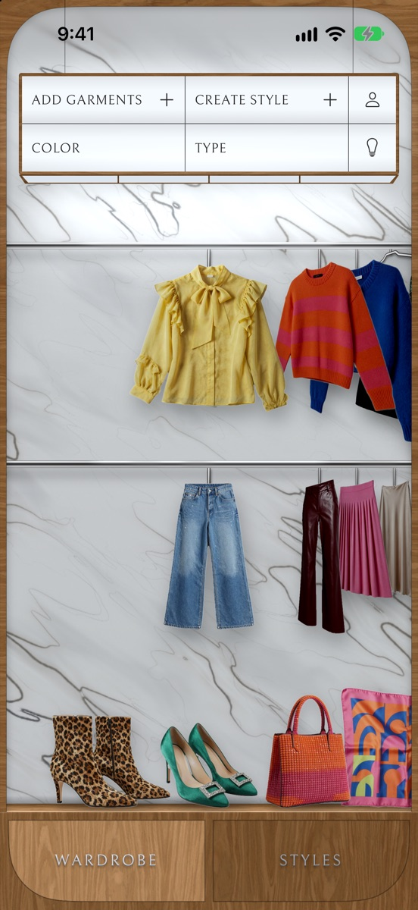
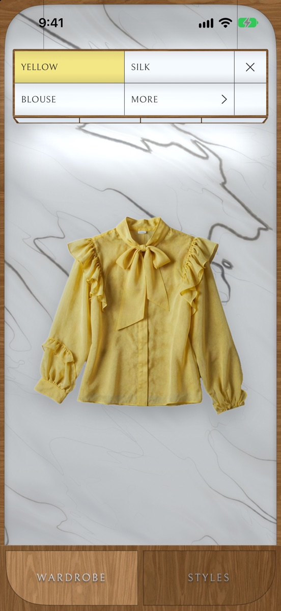
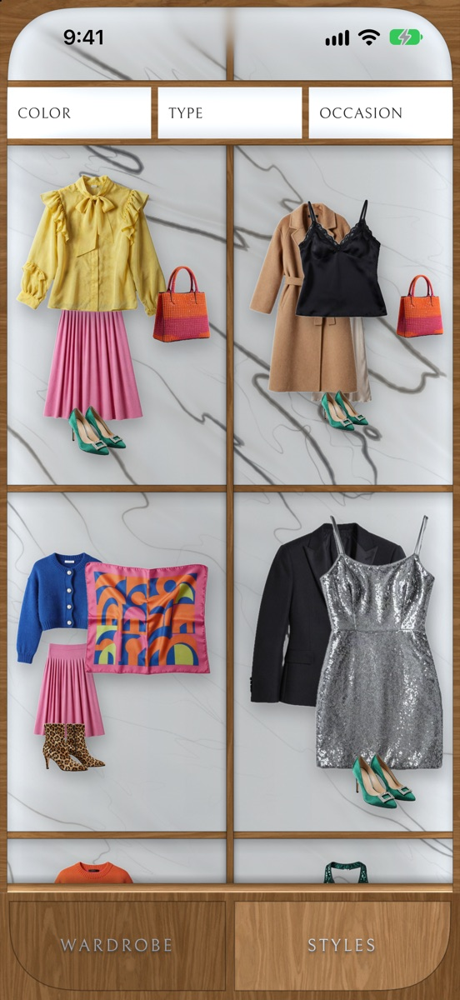

Stashed – Wardrobe
Your wardrobe, beautifully kept. On your iPhone, and nowhere else.



- Add garments with the camera or from your photos. They are found, cut out and tagged on your iPhone.
- Browse them on lit rails, and filter by type, color and occasion.
- Save the garments in the middle of the rails as a style.
- Mark garments as dirty or needing repair, and read care labels with the camera.
- No account, no analytics, no network connection.